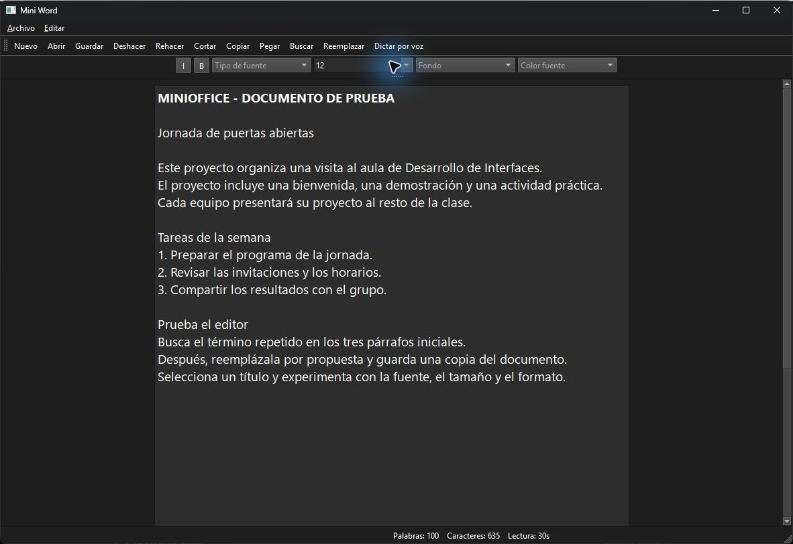

2DAM DI · Tarea
QT6 - 9 Mini office -Practica final - alfa
Instrucciones
Objetivo: desarrollar la primera versión funcional de MiniOffice, un editor de notas con PySide6. Esta versión será la base de la práctica final.
1. Construye la interfaz
- Utiliza una ventana principal con el título «Mini Word».
- Coloca un
QTextEditcomo área de edición: debe ocupar la mayor parte de la ventana y adaptarse al redimensionado. - Incluye los menús Archivo y Editar, una barra de herramientas y una barra de estado.
2. Implementa los menús
Archivo: Nuevo, Abrir, Guardar y Salir.
- Nuevo: comienza un documento vacío.
- Abrir: permite elegir un archivo y carga su contenido en el editor.
- Guardar: guarda el contenido actual; si el documento aún no tiene archivo, solicita su nombre y ubicación.
- Salir: cierra la aplicación.
Editar: Deshacer, Rehacer, Cortar, Copiar y Pegar. Cada opción debe actuar sobre el documento o la selección actual.
Asigna atajos habituales y evita conflictos: por ejemplo, Ctrl + N, Ctrl + O y Ctrl + S para las operaciones de archivo. Reutiliza la misma acción cuando aparezca en el menú y en la barra de herramientas.
3. Completa la barra de herramientas
Debe ofrecer: Nuevo, Abrir, Guardar, Deshacer, Rehacer, Cortar, Copiar, Pegar, Buscar y Reemplazar. Identifica los botones mediante texto, iconos comprensibles o ayudas breves.
Buscar permitirá localizar texto en el documento y Reemplazar sustituir una coincidencia por otro texto. En esta versión puedes utilizar diálogos sencillos; el panel lateral con más opciones se desarrolla en la práctica final.
4. Añade información y personalización
- Muestra mensajes útiles en la barra de estado, como «Archivo guardado con éxito», cuando la operación termine correctamente.
- Añade un contador de palabras que se actualice al modificar el documento, también al abrirlo o vaciarlo.
- Ofrece una opción para cambiar el color de fondo del editor o el tipo de letra. Puedes incorporar ambas.
Comprueba el resultado y prepara la entrega
- Escribe una nota, guárdala, crea un documento vacío y vuelve a abrir la nota. Comprueba que recuperas el mismo texto.
- Prueba los menús, los botones, los atajos, el portapapeles y Deshacer/Rehacer.
- Busca una palabra existente y otra ausente; sustituye una coincidencia y comprueba el contador.
- Cancela los diálogos de Abrir y Guardar: la aplicación debe continuar funcionando y conservar el texto.
Prepara el código y sus recursos con las instrucciones de ejecución. Indica qué formato de archivo admite tu editor: para esta alfa basta con texto plano .txt; no se exige compatibilidad con Word.
Mejora recomendada: avisar si existen cambios sin guardar antes de Nuevo, Abrir o Salir.
Prueba Mini Word
Proyecto de Sonia Guevara García. Esta aplicación permite explorar los menús, las herramientas de edición, el formato y el contador de palabras. La captura muestra el ejecutable funcionando con el documento de prueba incluido.

Para probarla: descarga el ZIP de los materiales, extrae toda la carpeta y abre MiniWord-Portable.exe. Funciona en Windows de 64 bits sin instalar Python; conserva la carpeta _internal junto al ejecutable.
Empieza por editar el documento de ejemplo, guardar una copia y volver a abrirla. Después prueba buscar, reemplazar y cambiar el formato. El archivo .txt conserva el texto, pero no los estilos. Las funciones adicionales de la demo no amplían los requisitos de esta alfa.